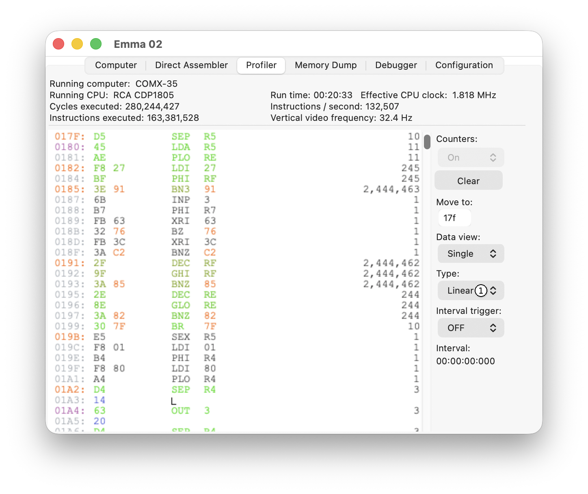
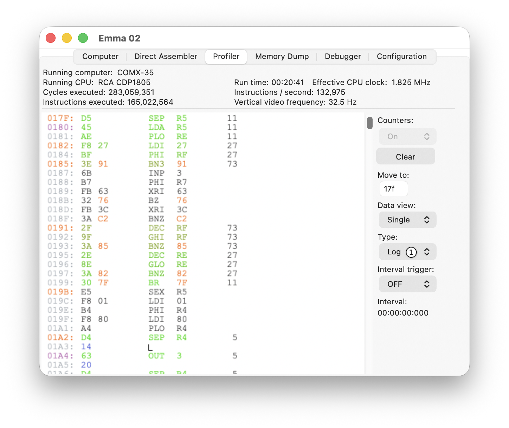

Two different types of execution counter are supported, linear and logarithmic. The type can be switched using the Type selector (1) shown below.
Linear:

Linear counters count up 1 for every time that specific instruction is executed, from 1 to a maximum of 18.446.744.073.709.551.615 (i.e., a 64-bit unsigned integer). When the maximum value is reached, the counter stops at the maximum value.
Logarithmic:

Logarithmic counters use the formula 5*ln(number of executions), with a maximum of 221.
For both options, the same counter value sets the colour of the instruction. See the Hot Code Spots section.